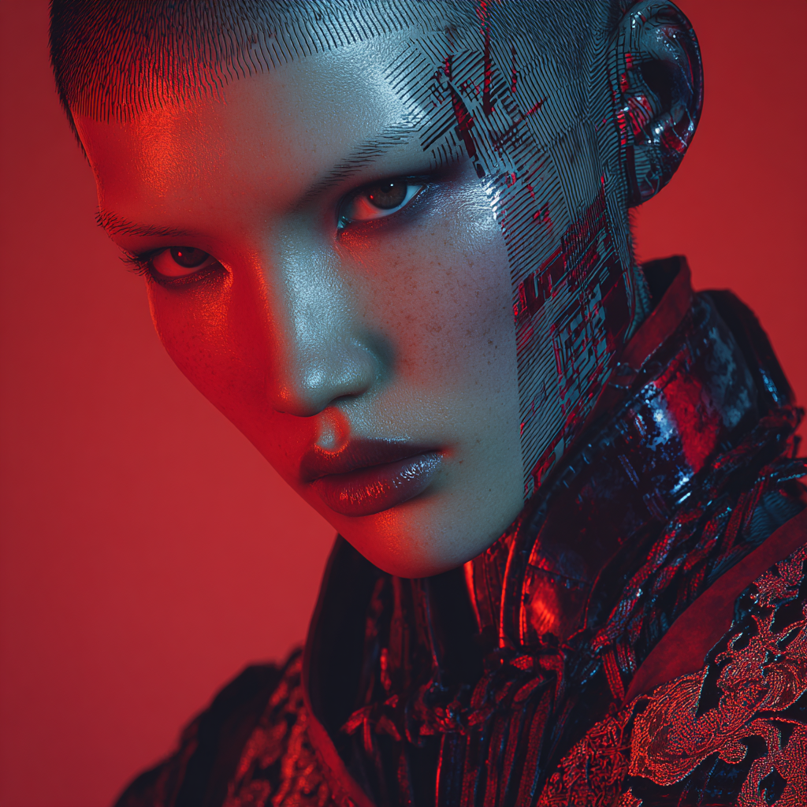
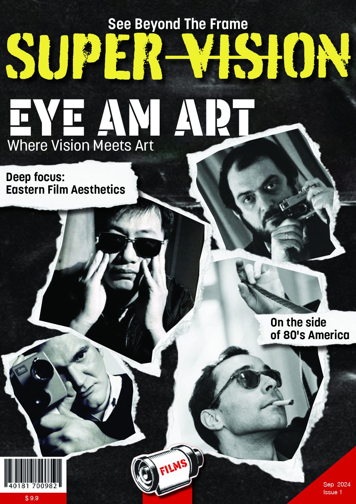
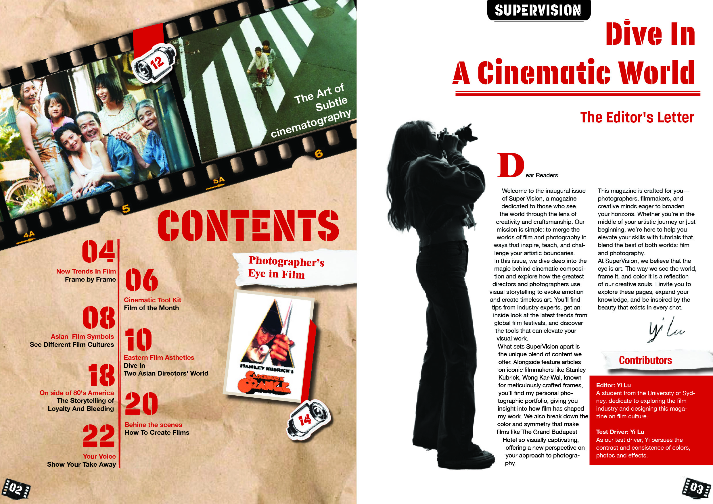
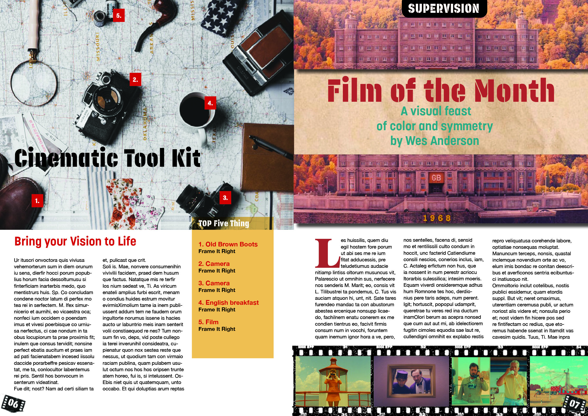
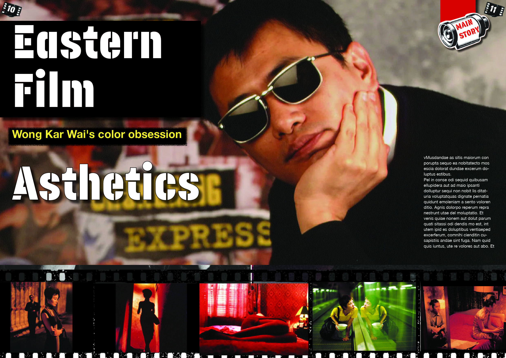
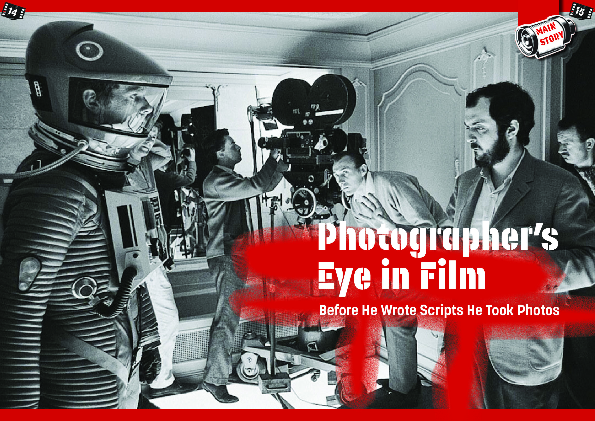
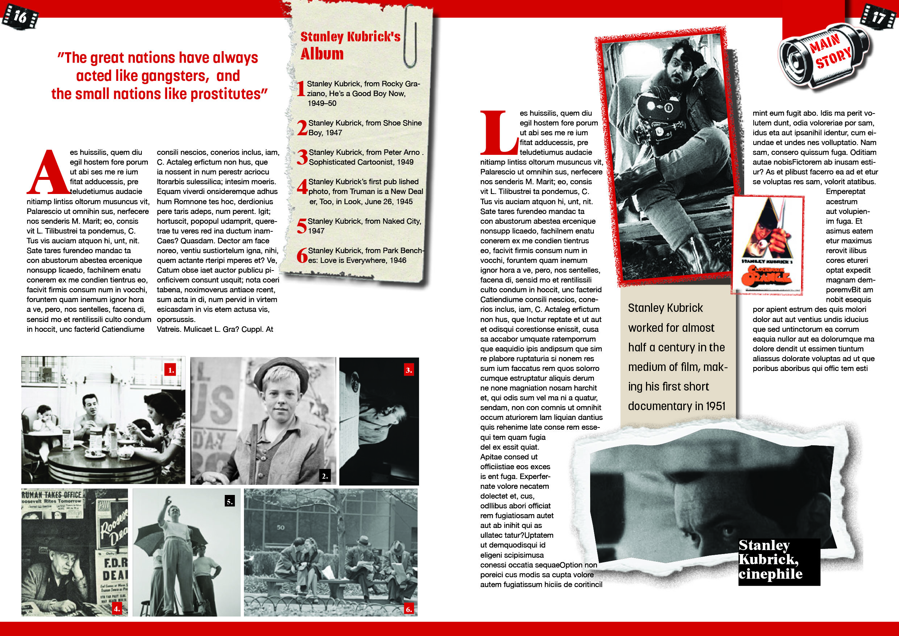
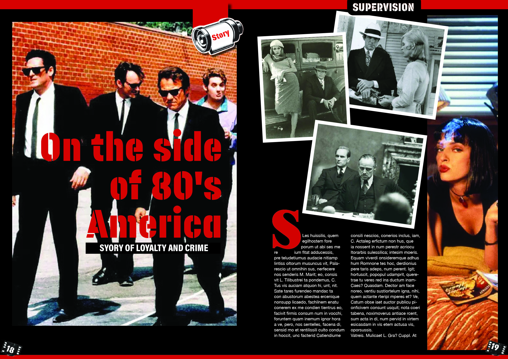
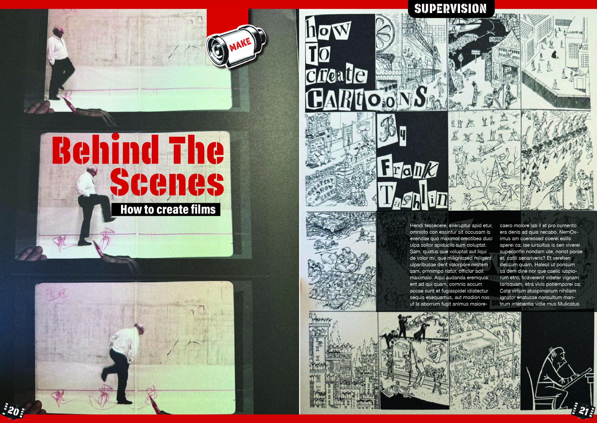
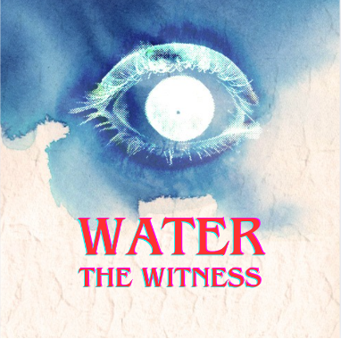

YI LU / 卢怡
VISUAL STRATEGIST ● BRAND OPERATIONS
悉尼大学 · 数字传播与文化硕士 (2026届)
AIGC 创作者 / 品牌策划 / 跨媒介制作人：摄影 · 短片 · 杂志 · 播客
AIGC PRODUCTION
ADOBE CREATIVE CLOUD
BRAND STRATEGY

01. EDITORIAL
16-PAGE VISUAL NARRATIVE
探索超现实主义与数字排版。通过跨页设计构建视觉叙事。
STRATEGY: VISUAL FLOW

P01
P02-03
P04-05
P06-07
P08-09
P10-11
P12-13
P14-15SCROLL TO EXPLORE
02. MOTION
THE CUBE OF BLOOD
基于 AIGC 资产的叙事动画实验。红黑视觉张力构建。
AIGC WORKFLOW
03. AUDIO STRATEGY
THROUGH WATER’S EYES
以“水”的视角审视世界。日常水声的哲学化表达。
SOUND ART
